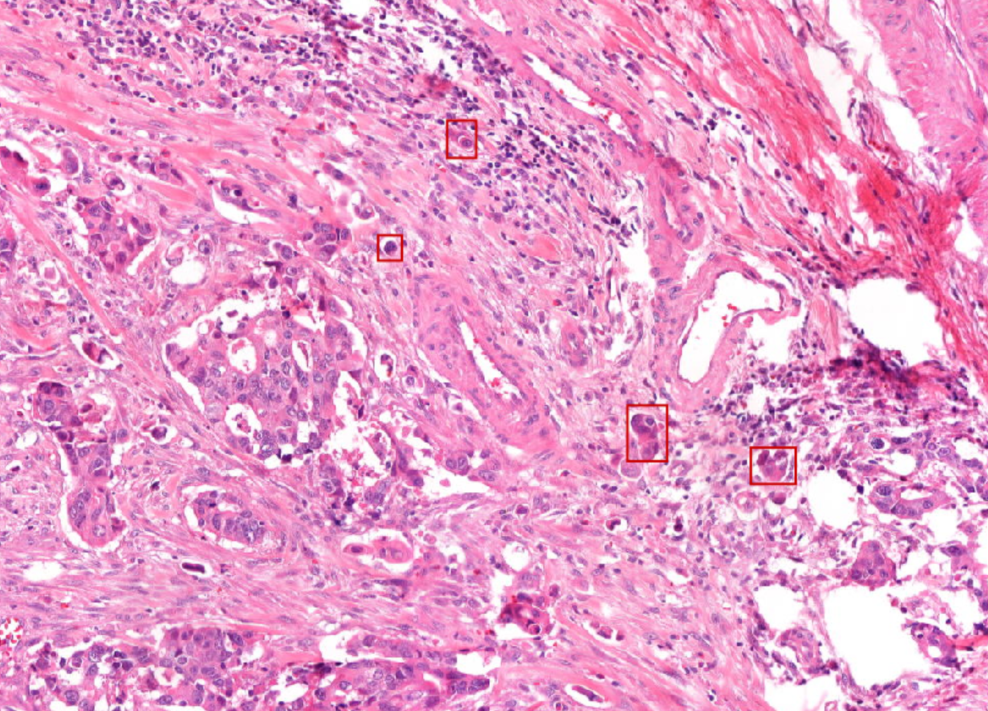
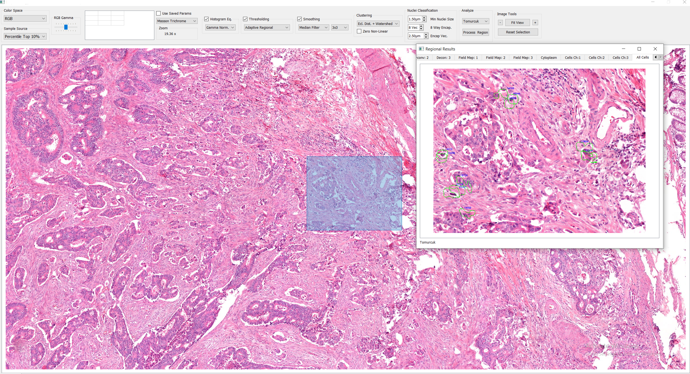

Tumor Budding Detection
Decision Support System for Detecting Tumor Buddings in WSI
Tumor budding, a pathological phenomenon characterized by the detachment of individual cancer cells from the primary tumor mass and their invasion into surrounding tissue, serves as a significant prognostic indicator for metastatic potential and typically signifies a more aggressive cancer phenotype. Despite its significance, the lack of a precise definition has presented substantial challenges for researchers, resulting in limited resources and subjective evaluation methods that heavily depend on the interpretations of individual pathologists.
As efforts to standardize the labeling and assessment of tumor budding continue, this study aims to contribute to clarifying its definition and advancing our understanding of its implications in cancer progression. We anticipate that with the increasing focus on this area, tumor budding will emerge as a hot topic among researchers in the future.
Furthermore, detecting tumor buds in Whole Slide Imaging (WSI) poses a challenge due to the extensive data volume and the requirement for careful examination, particularly as tumor buds can be difficult to distinguish from nearby structures. This complexity necessitates the use of sophisticated algorithms. Our developed algorithm consists of two modules: the initial stage identifies candidate regions that potentially contain tumor buddings, while the subsequent stage focuses on segmenting tumor budding using dual-channel information from both target and contextual patches. This algorithm is accessible through a user-friendly interface designed for medical professionals to easily evaluate. The provided images demonstrate visualizations obtained from this prototype.
Results from Prototype Interface

